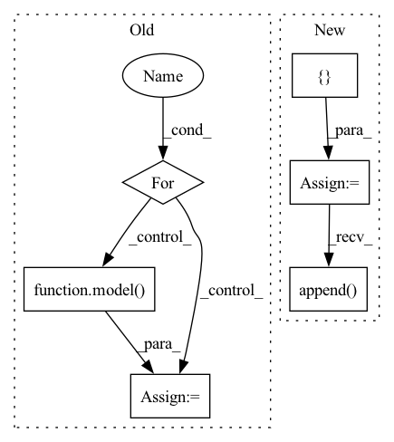

Pattern ID :36436
Before Change
tokenizer = AutoTokenizer.from_pretrained(tokenizer_name)
results = {}
for label in labels:
hypothesis = f"This example is {label}."
features = tokenizer.encode(input_text, hypothesis, return_tensors="pt",
truncation_strategy="only_first")
logits = model( features) [0]
entail_contradiction_logits = logits[:, [0, 2]]
probs = entail_contradiction_logits.softmax(dim=1)
prob_label_is_true = probs[:, 1]
results[label] = prob_label_is_true.item()After Change
// Must have a consistent amount of examples
assert(len(input_text) == len(labels))
// TODO: implement proper batching
results_list = []
for text, labels in zip(input_text, labels):
results = {}
for label in labels:
results[label] = calculate_probability(text, label)
results_list.append( results)
return results_list
else:
results = {}In pattern: SUPERPATTERN
Frequency: 4
Non-data size: 6
Instances Fragment ID: 103024836
Project Name: backprop-ai/backprop
Commit Name: 7f0b95ef8169196944a99724b719f73413b4f159
Time: 2020-12-28
Author: ojasaarkristo@gmail.com
File Name: kiri/models/classification.py
M Class Name: AnonimousClass
N Class Name: AnonimousClass
M Method Name: zero_shot(5)
N Method Name: zero_shot(5)
M Parent Class:
N Parent Class:
M File Name: kiri/models/classification.py
N File Name: kiri/models/classification.py
M Start Line: 38
M End Line: 49
N Start Line: 49
N End Line: 69
Before Change
train_loader = torch.utils.data.DataLoader(train_dataset, batch_size=batch_size, shuffle=shuffle)
criterion = torch.nn.MSELoss().to(device)
for batch_data in train_loader:
encoder_inputs, labels = batch_data
outputs = model( encoder_inputs, edge_index)
assert outputs.shape == (batch_size, node_count, num_for_predict)
def test_mstgcn():
After Change
T = len_input
x_seq = torch.zeros([batch_size,node_count, node_features,T]).to(device)
target_seq = torch.zeros([batch_size,node_count,T]).to(device)
edge_index_seq = []
for b in range(batch_size):
for t in range(T):
x, edge_index = create_mock_data(node_count, edge_per_node, node_features)
x_seq[b,:,:,t] = x
if b == 0:
edge_index_seq.append( edge_index)
target = create_mock_target(node_count, num_classes)
target_seq[b,:,t] = target
shuffle = True
train_dataset = torch.utils.data.TensorDataset(x_seq, target_seq) Fragment ID: 103024820
Project Name: benedekrozemberczki/pytorch_geometric_temporal
Commit Name: 8efa512ff3ac06546a082de036a85428720abd7a
Time: 2021-03-20
Author: He_YX@outlook.com
File Name: test/convolutional_test.py
M Class Name: AnonimousClass
N Class Name: AnonimousClass
M Method Name: test_astgcn(0)
N Method Name: test_astgcn(0)
M Parent Class:
N Parent Class:
M File Name: test/convolutional_test.py
N File Name: test/convolutional_test.py
M Start Line: 248
M End Line: 285
N Start Line: 236
N End Line: 266
Before Change
train_loader = torch.utils.data.DataLoader(train_dataset, batch_size=batch_size, shuffle=shuffle)
criterion = torch.nn.MSELoss().to(device)
for batch_data in train_loader:
encoder_inputs, labels = batch_data
outputs = model( encoder_inputs, edge_index)
assert outputs.shape == (batch_size, node_count, num_for_predict)
def test_astgcn_change_edge_index():
After Change
T = len_input
x_seq = torch.zeros([batch_size,node_count, node_features,T]).to(device)
target_seq = torch.zeros([batch_size,node_count,T]).to(device)
edge_index_seq = []
for b in range(batch_size):
for t in range(T):
x, edge_index = create_mock_data(node_count, edge_per_node, node_features)
x_seq[b,:,:,t] = x
if b == 0:
edge_index_seq.append( edge_index)
target = create_mock_target(node_count, num_classes)
target_seq[b,:,t] = target
shuffle = True
train_dataset = torch.utils.data.TensorDataset(x_seq, target_seq) Fragment ID: 103024817
Project Name: benedekrozemberczki/pytorch_geometric_temporal
Commit Name: 8efa512ff3ac06546a082de036a85428720abd7a
Time: 2021-03-20
Author: He_YX@outlook.com
File Name: test/convolutional_test.py
M Class Name: AnonimousClass
N Class Name: AnonimousClass
M Method Name: test_mstgcn(0)
N Method Name: test_mstgcn(0)
M Parent Class:
N Parent Class:
M File Name: test/convolutional_test.py
N File Name: test/convolutional_test.py
M Start Line: 291
M End Line: 328
N Start Line: 293
N End Line: 311